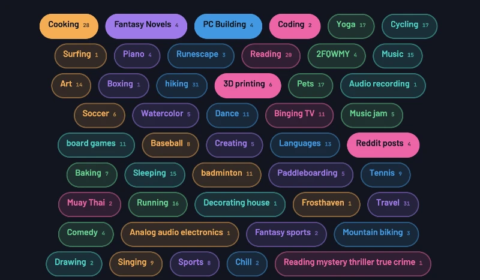
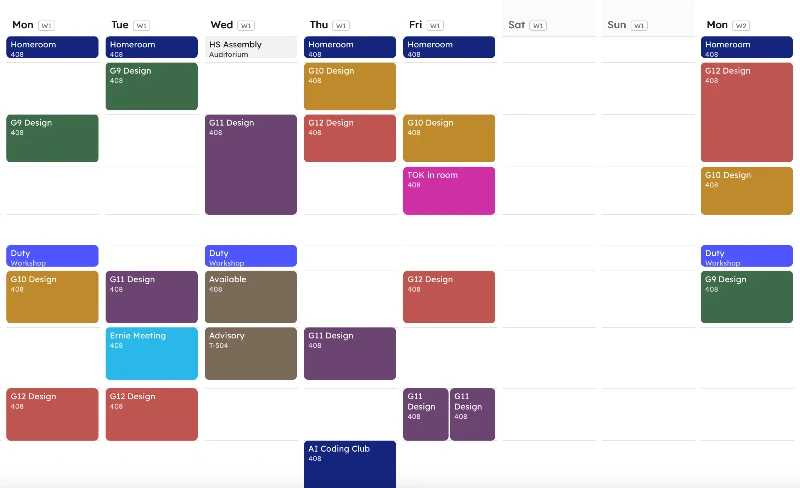
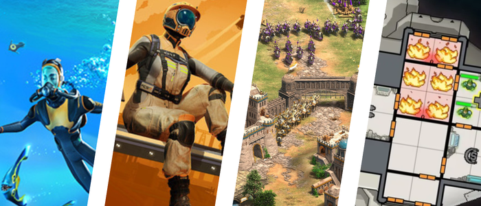

MYP Tools
The tools built to go alongside the MYP Design units.
DP Tools
The tools built to go alongside the DP Design Technology course.
localAI
How local AI models actually run: hardware, memory bandwidth, and the real cost of inference.
Code with AI
The words, the tools, and how to work with an AI assistant without letting it do the work for you.
In progressAI in Education
How AI tools work today, and how to use them to learn rather than to skip learning.
Runestone Expedition
Turn tiles over one at a time, fight what you find, and take the Runestone before your torch burns out.
Castle Assault
You are the archer on the wall. Aim, draw, and lead what is walking at you, before the wall goes out from under you.
Tome of Secrets
A deckbuilding roguelike. Pick a hero, build your deck, and fight your way through the Tome.
GameBench
A set of tools for people making tabletop games.
Blurt.
A fast word game for 2+ players.
DP Design Technology IA Guide
A detailed walkthrough of how to achieve success with your IA project.

cloud.
A fast, easy, account-free tool for building live word clouds.
DP Design Technology IA Marks Reference
Cross-reference 3 sample IA's to explore different levels of achievement.
Infinite Composites
Learn about materials in a game inspired by Infinite Craft
Auditorium Seating Planner
Quickly build an attractive seating plan for the ISNS auditorium

time.
A timetable/schedule website for teachers and students.
Macropad Builder
Plan components, wiring, and create downloadable code to build a Macropad with an ESP32 device.
Game Mechanics Catalog
A ton of mechanics from tabletop and video games to help build your own!
Explore PC Parts
Discover 50 years of computer components
Material Selection Text Adventure
The town of Central Middlezhong needs your design expertise!
Flashstone
Turn any flashcard deck into a duel. Import your cards and play to actually remember them.
Device Room Rules
No, you can't play GTA in the device room :/
AI Model Deep Dive
How machine learning actually works: training a model, testing it, and improving it
User Persona Builder
Answer guided questions about your primary user and build a printable A4 persona.
→ Goals, needs and wants
→ Frustrations and limitations
→ Download as a 300dpi PNG
Electronics Parts Catalog
Stuff we have in class, what it's for, and how to use it.

You Should Play These Games
A bunch of awesome games with educational benefits
Museum of Mr. K's Technology v0.3
A 2D tech demo
Ashby Chart Game
Learn about materials and logarithmic charts at the same time!
Task Analysis Map
Build a hierarchical task analysis by dragging and connecting step cards on a freeform canvas
→ User opens Google Chrome
→ User types 'Google' into search bar
→ User searches for 'Facebook' on Google.com
Quality Control Simulator
Make money and try not to make mistakes testing products. "Fun"
DooT
An in-progress retro shooter where the player uses music to fight demonic instruments.
Choose Your Own Adventure
It will feature full narration by the author!
Regulatory Papers, Please!
Take a product from design to market and collect regulatory certification!
In developmentDuoShan躲闪
Elite dodgeball: a physics-driven team game played in the browser.